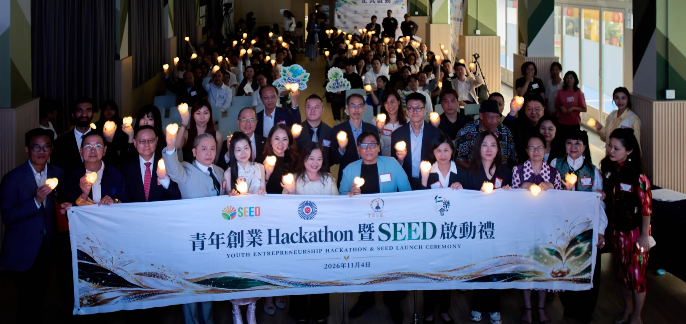
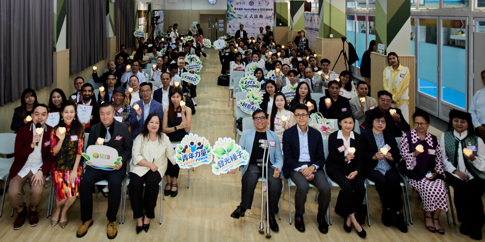
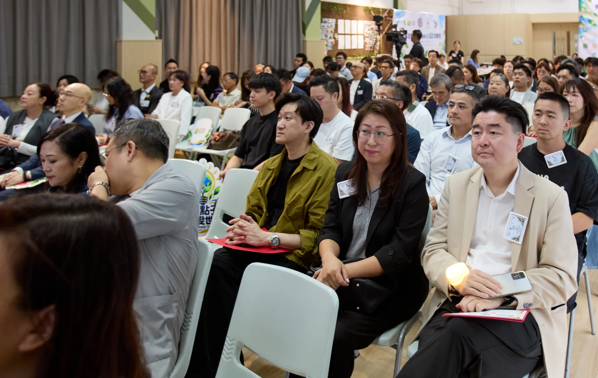
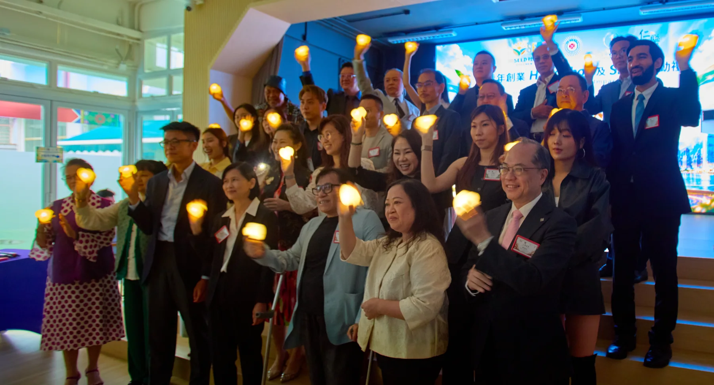
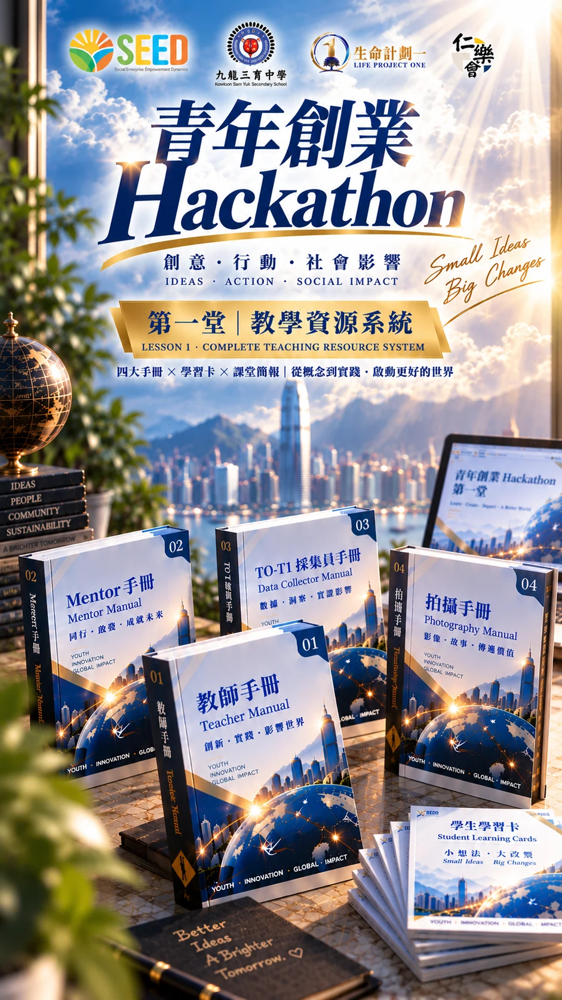
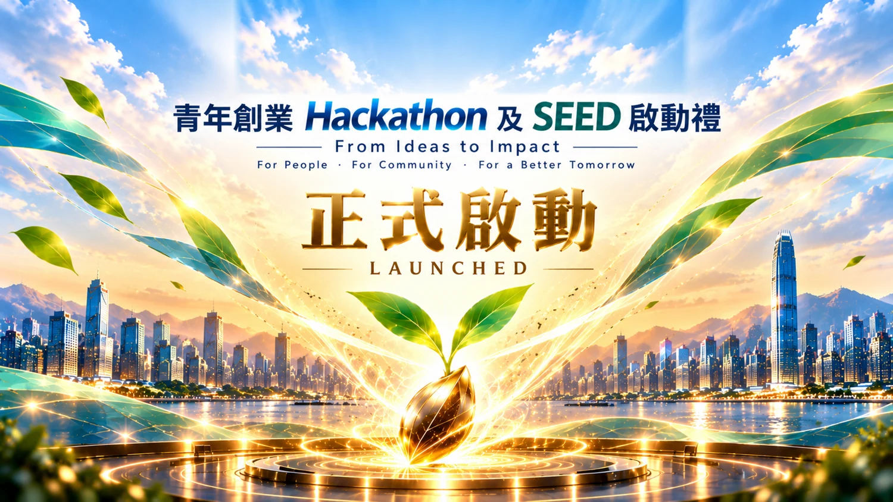

A BEGINNING, TOGETHER ／ 活動回顧
青年創業 Hackathon
及 SEED 啟動禮
2026.11.04 九龍三育中學
以破格開創可能，
以章法成就創新。
THE OCCASION ／ 攜手啟航
由一個起點，
走向持續的實踐。
SEED、九龍三育中學、生命計劃一及仁樂會攜手推動「青年創業 Hackathon」，以九龍三育中學為創新起點，結合創業教育、AI 與社會影響力實踐，支持青年將創意化為行動。
本計劃以國際披露與社會影響框架為前瞻性參考，借鑑國際可持續準則理事會（ISSB）所制定準則的披露思路，從課程設計開始，將主張、證據、來源與假設連結起來，建立有據可依的實踐路徑。
現有教學設計已納入聯合國可持續發展目標對應（SDG Mapping）、T0 至 T4 分階段追蹤機制，以及 B Corp 所倡議的企業社會與環境責任概念，讓學生的學習、小組的社會影響及教學改進，都能逐步留下可檢視的記錄。
未來，我們將逐步研究與歐洲可持續發展報告準則（ESRS）的銜接，尤其關注其社會範疇的披露議題；同時探索 ISO 26000 社會責任指南，以及法國相關社會責任評估框架的參考價值。
我們的長遠目標，是把投入、實踐、成果與修訂連成可披露、可追溯、可查核的證據鏈，為香港不同界別在 ESG 的社會（S）範疇提供可累積、可檢視的實踐參考，提升資料可信度與決策透明度。
認識框架與名詞 ＋
- ISSB ／ 國際可持續準則理事會
- 制定 IFRS 可持續披露準則的機構，重點是可持續相關財務資訊披露。本計劃借鑑其披露思路作教育及前瞻性研究參考。IFRS 官方資料 ↗
- SDG Mapping ／ 可持續發展目標對應
- 將項目議題與預期成果對應至聯合國可持續發展目標，配合證據記錄及成效檢視。聯合國目標資料 ↗
- T0–T4 ／ 分階段追蹤
- 由 T0 起點基線延伸至 T1–T4 後續量度，持續追蹤學生學習、小組實踐與社會影響，讓不同階段的記錄相互連結，支持成效檢視及方案修訂。
- B Corp ／ B 型企業理念
- 參考 B Lab 對企業社會、環境及治理表現的理念，納入責任創業教育；概念引用不代表本計劃已獲 B Corp 認證。B Lab 官方資料 ↗
- ESRS ／ 歐洲可持續發展報告準則
- European Sustainability Reporting Standards，規範可持續發展資訊披露。其社會議題涵蓋自身員工、價值鏈工作者、受影響社區，以及消費者與終端使用者，屬本計劃未來研究銜接的方向。EFRAG 官方資料 ↗
- CSRD ／ 企業可持續發展報告指令
- Corporate Sustainability Reporting Directive，是歐盟的報告指令；ESRS 是相關報告準則，兩者角色不同。歐盟委員會官方資料 ↗
- ISO 26000 ／ 社會責任指南
- 為各類組織提供社會責任指引，並非認證標準。法國相關評估框架的具體研究範圍，將於確認後再作更新。ISO 官方資料 ↗
現階段為教學設計、框架參考及前瞻性研究；國際銜接會按實踐與證據累積逐步推進。
感謝每一位嘉賓蒞臨支持，與我們共同見證這個起點。每一次交流、每一份鼓勵，都為青年帶來向前探索的力量。
THE HIGHLIGHT FILM ／ 光影回顧
把這一刻，留給未來。
一分鐘回顧 · 23 張精選相片
青年創業、AI 與社會影響力，從共同見證走向實踐。
下載精華短片 ↓當日開場影片
2 分 7 秒重溫啟動禮當日播放的開場影片。
下載當日開場影片 ↓MOMENTS THAT MATTER ／ 現場片段
同行的面孔，
共同的期待。
交流、分享與每一份支持，
匯成青年成長路上的同行力量。



LEARNING INTO ACTION ／ 教育願景
讓創意有根據，
讓實踐有延續。
青年創業 Hackathon 是一段持續的學習歷程。青年由觀察真實社會問題開始，善用 AI 探索資料，透過導師交流與真實場景實踐，記錄證據、聆聽回饋，再修訂方案。
以九龍三育中學為起點，我們期望逐步拓展至全港、連結國際，讓更多青年在實踐中建立能力，為社會創造正面影響。
- 01
學習與觀察
理解社會需要，以資料與證據界定問題。
- 02
AI 與創業設計
探索可能，結合資源，形成可實踐的方案。
- 03
真實場景實踐
在導師及伙伴支持下，將構想化為行動。
- 04
證據、回饋、修訂
記錄社會影響，持續學習，再次實踐。

THE PROJECT IN PICTURES ／ 項目視覺
以教材連結學習，
以實踐累積成長。
教師、Mentor、採集員與影像記錄各有角色；學習卡與證據記錄，將觀察、行動和反思連在一起。

WITH APPRECIATION ／ 鳴謝
感謝每一位同行者。
感謝主禮嘉賓、顧問團、合作伙伴、嘉賓、老師、同學及台前幕後團隊，以時間、專業與熱誠支持青年成長。
THE PHOTO ARCHIVE ／ 相片珍藏
尋找您的合照。
137 張活動相片
按組別瀏覽 · 逐張下載原圖
先揀相簿，再按相片放大。原圖保留相機檔名，方便儲存及分享；您亦可輸入相片編號尋找。
JOIN THE JOURNEY ／ 誠邀加入
誠邀您加入，
一起支持青年走得更遠。
我們誠邀所有有心支持青年成長的個人、學校、企業、專業人士及社區伙伴加入同行。無論是分享經驗、擔任導師、提供專業支援、連結社區，或開拓真實實踐機會，每一份參與都能為青年帶來更多成長空間。
讓我們由九龍三育中學這個起點出發，攜手推動計劃逐步拓展至全港、連結國際，支持青年把創意化為行動，為青年及社會創造持續而正面的影響。
有意參與、合作或支持青年服務，歡迎聯絡我們，一起探索可以同行的方式。
重溫活動及下載合照 ↗